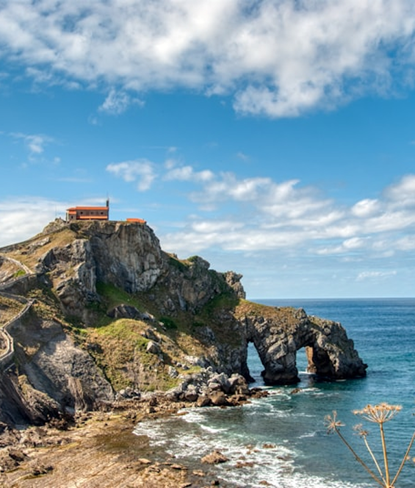
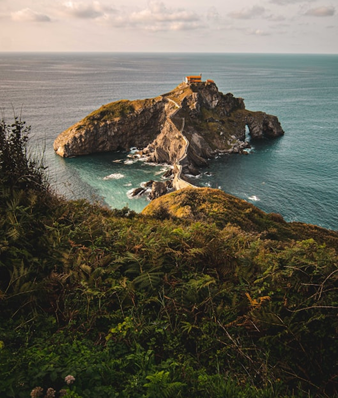
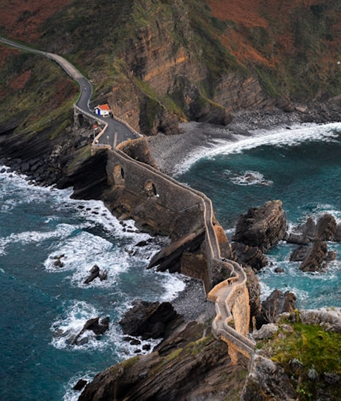
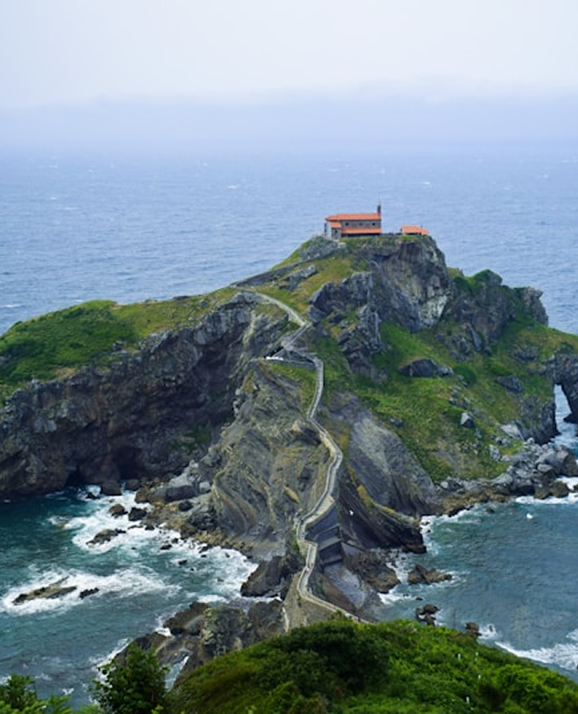

San Juan de Gaztelugatxe is far more than a scenic landmark. Over a thousand years, the island has become a living vessel of Basque identity — shaped by pilgrimage, maritime faith, Celtic legend, and a global spotlight it never asked for.






Throughout the year, the towns of Bermeo and Bakio mark the rhythms of the sea with festivals that have changed little over centuries. The most important is the Feast of Saint John the Baptist on 24 June, when pilgrims make the climb up all 241 steps to attend a special mass at the summit hermitage — a tradition observed without interruption for over five hundred years.
Fishing festivals honour the men and women who have worked these waters for generations. Boats circle the island before setting out, a ritual blessing from Saint John for safe passage. In summer, the streets of nearby Bermeo fill with music, food stalls, and folk dancing rooted in Basque culture — the txalaparta percussion, the aurresku welcome dance, and songs in Euskara that predate the Roman conquest of Iberia.

The hermitage at the summit is dedicated to Saint John the Baptist, and the island carries the weight of centuries of devotion. According to local tradition, John the Baptist himself once set foot on Gaztelugatxe — and his footprint is said to remain pressed into the stone near the top of the staircase. Pilgrims have placed their own foot into that hollow for generations, seeking good fortune.
Upon reaching the chapel bell after the 241-step climb, visitors ring it three times. The ringing is said to ward off evil, grant a wish, or protect loved ones at sea. Fishermen from Bermeo still observe a centuries-old custom: before sailing out, their boats circle slowly before the island to receive Saint John's blessing for the voyage ahead.
The island also carries darker folklore. During the Spanish Inquisition, accused witches from the Basque region — whose Akelarre (ritual gatherings) were bound up in the landscape — were reportedly held in the sea caves beneath the cliffs. The island sits at the edge of the known and the unknowable, and the Basques have always known it.

In 2017, HBO's Game of Thrones brought Gaztelugatxe to screens in 170 countries. The island's dramatic staircase and clifftop hermitage were chosen as the exterior of Dragonstone — the ancestral seat of House Targaryen — for Season 7. The digital production team added towers and battlements in post, but the stone bridge, the winding steps, and the crashing Atlantic below were entirely real.
Key scenes were filmed here: Daenerys Targaryen's return to Westeros, her first walk up the steps of her family's ancient home. For millions of viewers, that staircase became mythic. For the Basques, it was Tuesday.
The island's appearance in the series sent visitor numbers surging. In the years following broadcast, Gaztelugatxe became one of the most recognised landmarks in northern Spain, drawing fans from across the world alongside traditional pilgrims. To manage the pressure on the fragile site, Bizkaia introduced a mandatory advance reservation system — a reminder that this ancient place must be protected even as it finds new audiences.